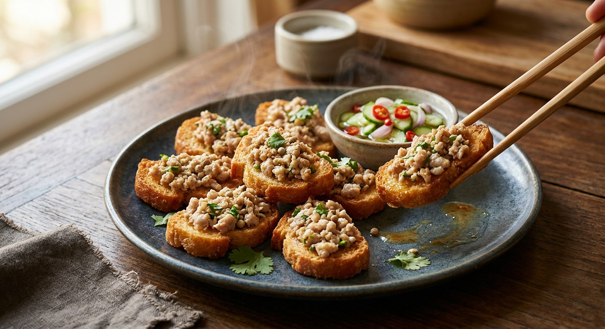

Minced pork pounded with coriander root, garlic and pepper, spread over oven-dried bread and fried pork-side down until the bread turns gold — served with ajad, the sweet-sour cucumber pickle.

ขนมปังหน้าหมู reads literally as "bread with a pork face" — a slice of bread wearing a layer of minced pork, fried until the bread is gold and the pork is cooked. It is a snack first, an appetite before the main event, and every Thai source treats it as home food: Kapook's intro suggests it for bread that is going stale, TrueID's version is pitched as a เมนูสร้างอาชีพ — a menu you can build a business on — and Matichon's is a grandmother teaching her grandchild in the kitchen, with ยาย standing by the pan giving orders.
The craft hides in two details. First, the bread: it must be dried before it is fried, or it drinks the oil. TrueID's cooks sun-dry the pieces three to four hours, or bake them ten minutes at 150°C; Pim's blog takes it further — two rounds of sun-drying to bone-dryness, with a fingertip press-test: if the centre gives at all, back out it goes. Second, the pork: spread it thin. Both TrueID and Pim warn that a thick layer never cooks through before the bread burns.
Then comes the fry. The bread goes in pork side down over a medium flame, and most cooks flip it once the edges brown. Matichon's grandmother forbids the flip entirely — she has her grandchild ladle hot oil over the meat side instead, so the topping cooks without scorching. The finished pieces arrive with their pickle, อาจาด, the sweet-sour ajad of cucumber, shallot and chilli in a vinegar syrup — the cold snap that cuts the hot, crisp, porky toast. Eat it hot, with a cold drink, and Matichon's author notes it is filling enough to stand in for a rice meal.
| Thai | English | Amount |
|---|---|---|
| ขนมปัง | White bread | 10 slices |
| หมูสับ (หรือไก่ กุ้งสับ) | Minced pork (or chicken or shrimp) | 350 g |
| ไข่ไก่ | Eggs | 2 |
| ซีอิ๊วขาว | Light soy sauce | 1½ tbsp |
| น้ำตาลทราย | Sugar | ½ tsp |
| รากผักชี | Coriander root | 3 roots |
| กระเทียมไทย | Garlic | 1 tbsp |
| พริกไทยขาว | White peppercorns | 1 tsp |
| พริกชี้ฟ้าแดงหั่นเส้น | Red spur chilli, in strips (garnish) | as needed |
| ใบผักชี | Coriander leaves (garnish) | as needed |
| น้ำมันสำหรับทอด | Oil (for frying) | as needed |
| For the ajad (น้ำจิ้มอาจาด) | ||
| น้ำส้มสายชู | Vinegar | ¼ cup |
| น้ำตาลทราย | Sugar | ¼ cup |
| น้ำเปล่า | Water | ¼ cup |
| เกลือป่น | Salt | ½ tsp |
| แตงกวาหั่น | Cucumber, sliced | 1 |
| หอมแดงซอย | Shallots, sliced | 2 |
| พริกชี้ฟ้าแดงซอย | Red spur chilli, sliced | 1 |
Kapook's home classic (Kitty Chef): 200 g pork marinated with a tablespoon each of coriander root, garlic and pepper, 3 tablespoons light soy, 2 tablespoons oyster sauce, 1 tablespoon cornflour and half an egg — the bread baked 15 minutes at 150°C with the crusts kept on, the pork garnished with paprika and parsley, and tomato sauce offered alongside the ajad. The no-fry version (Kapook, from Pantip): 100 g minced pork loin on wholewheat bread, seasoned with low-sodium fish sauce, garlic powder and oregano, the egg white worked into the pork and the yolk brushed over the bread, baked 8 minutes at 180°C. ยาย's version (Matichon): 200 g minced pork kneaded with two eggs, brown sugar, salt, a handful of garlic and whole coriander plants — fried without ever flipping, oil ladled over the top (see the disagreements below).
Fry or bake. Five of six sources deep-fry. The sixth, Kapook's Pantip cook, has "permanently said goodbye to the fried kind" (ขอบายเมนูขนมปังหน้าหมูทอดแบบถาวร) and bakes hers at 180°C on wholewheat bread instead.
The flip. TrueID and Pim fry pork side down and flip when the edges brown. Matichon's grandmother never flips — she ladles hot oil over the meat side with the spatula so the topping cooks without the bread scorching.
The bread. TrueID and Kapook's Kitty Chef dry it in a 150°C oven (10–15 minutes); Pim sun-dries it twice to bone-dryness; Matichon, Homenayoo and the oven version don't dry it at all. On crusts, Kitty Chef keeps them and TrueID and Pim cut them off.
The eggs. Half an egg in the mix (Kitty Chef), one in the mix plus one brushed on top (TrueID), a separated egg — white in the pork, yolk as glue (the oven version), two whole eggs (Matichon), a modest 1½ tablespoons beaten egg (Pim) — and then there is ยายเสน's version: seven eggs and 3 tablespoons of crispy fry flour in half a kilo of pork, a fluffy coating that also covers the bottom of the bread. Only her recipe coats both sides.
The seasoning. Light soy and sugar (TrueID, Pim) or with oyster sauce added (Kitty Chef); brown sugar and salt (Matichon); seasoning sauce plus soy (Homenayoo); low-sodium fish sauce with garlic powder and oregano (the no-fry version).
The sauce. Ajad is the near-universal partner, but the syrup ratios differ — ¼ cup each of vinegar, sugar and water (TrueID), a richer ½–¼–⅛ (Pim), and Homenayoo's made by feel with sugar syrup. Kitty Chef alone offers tomato sauce as the alternative, the oven version offers sriracha. In the ajad, Pim prefers jinda chillies over the standard red spur chilli — hotter, she says, to cut the grease.
The meat. Pork everywhere, but TrueID swaps in chicken or shrimp freely, Kitty Chef suggests ขนมปังหน้าไก่ (chicken) when pork bores you, and the no-fry version specifies minced pork loin.
This recipe is translated from the following Thai-language sources. Where they disagree, we've said so.
1. TrueID Food — "แจกสูตร วิธีทำ ขนมปังหน้าหมู เมนูสร้างอาชีพ ทำกินเองได้ง่ายๆ ทำขายก็เวิร์ค" by แม่ซี น้องมดดี้ channel (the recipe used here) — food.trueid.net
2. Kapook — "ขนมปังหน้าหมู อาหารว่างกรอบนุ่มหน้าแน่นอร่อยเพลินยกครัว" by คุณ Kitty Chef (Pantip) — cooking.kapook.com
3. Pim — "ขนมปังหน้าหมู" (the double sun-drying and double blotting) — pim.in.th
4. Matichon Academy — "เปิดสูตร 'ขนมปังหน้าหมู' เมนูกินเล่น ทำเองง่ายๆ" by พัชรพร องค์สรณะคมกุล (the no-flip method) — matichonacademy.com
5. Homenayoo — "วิธีทำขนมปังหน้าหมู สูตรคุณยายเสน ไม่อมน้ำมัน พร้อมอาจาดรสเด็ด" by คุณ ajiraTheCritic (Pantip) — homenayoo.com
6. Kapook — "ขนมปังหน้าหมู สูตรไม่ทอด สายสุขภาพกินได้ไม่อ้วนมาก" by คุณ MedIEviL (Pantip) (the oven version) — cooking.kapook.com